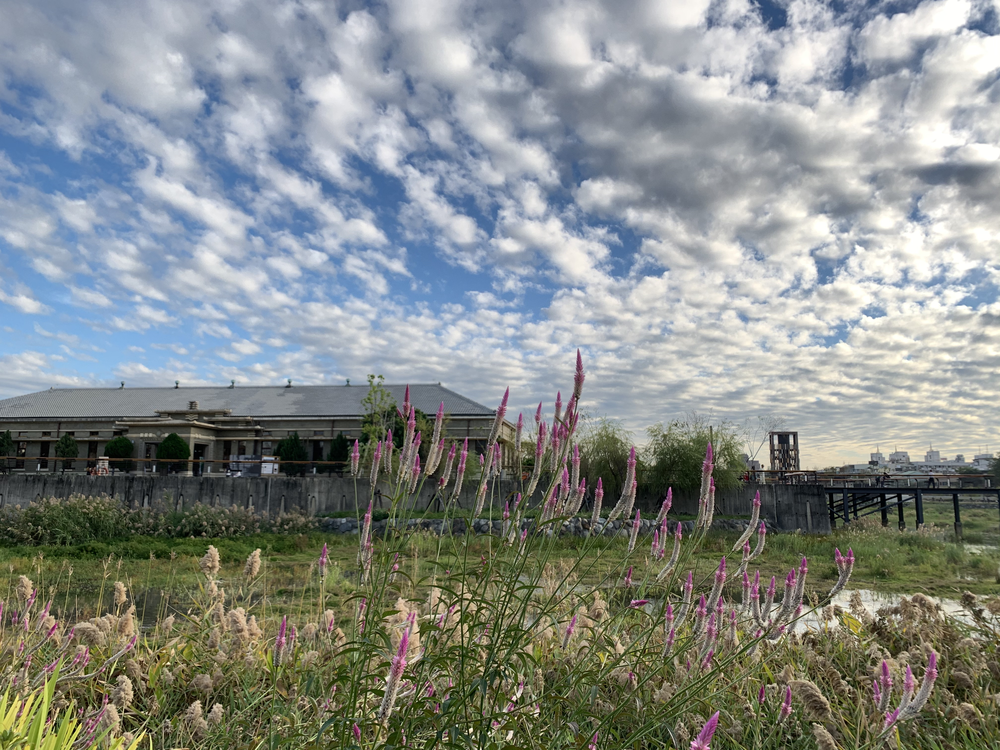

一、歷史與場域簡介
帝國製糖廠臺中營業所位於台中市東區，是台中近代糖業發展留下的歷史場域。 相關介紹資料指出，這處建築約於 1935 年興建，與日治時期的製糖產業及營業活動有關。 它不只是老建築，也讓人得以從城市空間回望台灣曾經重要的糖業經濟。
隨著產業結構改變，原有空間的使用方式也逐漸轉變。經過保存、修復與再利用， 帝國製糖廠臺中營業所成為兼具歷史意義與公共參訪價值的場所。
場域周邊連結湧泉公園與星泉湖，形成歷史建築、湖面、綠地及步行空間交會的景觀。 本篇的閱讀焦點，是理解帝國製糖廠如何將產業記憶與日常休閒空間放在同一個場域中。
地址：台中市東區樂業路 30 號。
提醒：出發前建議再次確認開放區域與現場公告。
二、建築特色與散步建議
值得留意的三個特色
- 歷史建築：觀察建築外觀、屋頂輪廓、門窗及保留的構造，想像過去的使用情境。
- 產業文化：從糖業相關歷史理解台中城市發展與產業變遷的關係。
- 湖畔綠地：周邊公園、湖面與步行空間提供不同於室內展館的戶外觀察經驗。
建議散步順序
請依照以下建議動線進行實地走讀：
- 先抵達湧泉公園周邊，確認入口與可步行的開放區域。
- 沿湖畔慢慢散步，觀察湖面、植栽及周遭環境。
- 走近帝國製糖廠臺中營業所，留意建築外觀與保存細節。
- 參照現場解說或官方資料，補充了解糖業歷史，再依時間決定是否繼續探索周邊。
三、場域特色比較表
| 區塊名稱 | 主要空間屬性 | 建議觀察重點 |
|---|---|---|
| 臺中營業所主建築 | 歷史建築 | 建築外觀、構造及產業歷史脈絡 |
| 星泉湖／湧泉公園 | 湖畔與公園景觀 | 湖面、植栽、自然環境與休憩感受 |
| 戶外步行空間 | 開放式公共空間 | 散步動線、停留位置與周邊景觀連結 |
四、歷史建築照片

五、相關影片
可透過影片先認識帝國製糖廠周邊景觀，再搭配本文觀察歷史建築與戶外空間。
若嵌入播放器無法使用，請改開啟 YouTube 一般影片連結（另開分頁）。
六、位置地圖與地址
帝國製糖廠臺中營業所地址：台中市東區樂業路 30 號。